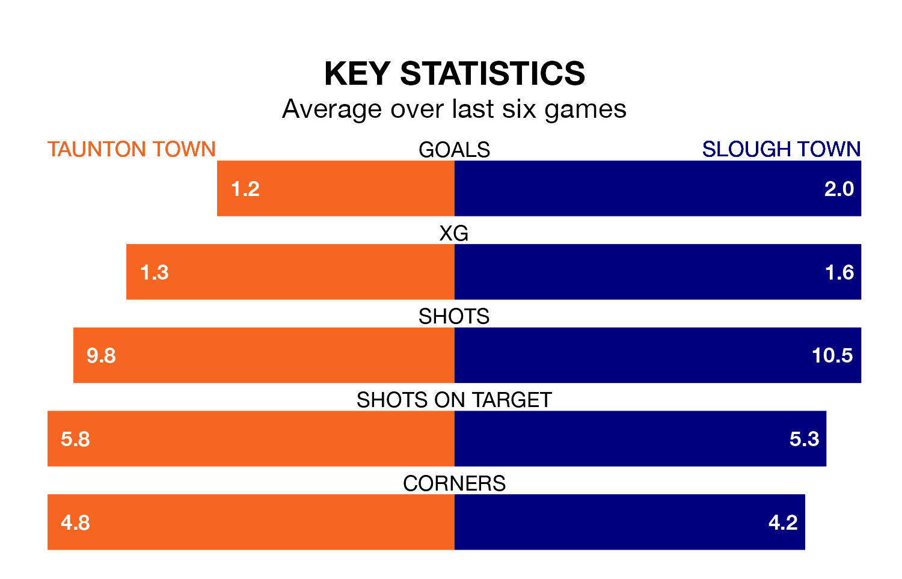

Taunton Town welcome Slough Town to the Cygnet Health Care Stadium on late Monday looking to pick up points to end their three-game losing streak.
Taunton's struggles have left them with just four points from their last six National League South matches, while their opponents have earned 11 from a possible 18.
With 39 goals in 35 games so far this season, Taunton are the league's second-lowest scorers with 1.1 goals per game. And they are conceding more than average, letting in 53 goals at a rate of 1.5 per game.
Slough, meanwhile, are above average scorers, with 1.8 goals per game, compared to a league average of 1.4. They have conceded 1.6 goals per game.
Taunton Town are 20th in the table after 35 games, of which they have won nine and drawn 13, earning 40 points.
Slough Town are nine places ahead of the home team in 11th, with 15 wins and 10 draws putting them on 55 points.
In the last five years, Taunton and Slough have played each other on four occasions. They won two each.
On average, Taunton scored 0.8 goals and Slough 1.2 in those matches.
Their last meeting was on January 6, when Slough won 3-0 at home.
Taunton's last match was on March 16, a 2-0 loss against Eastbourne Borough.
Slough lost 3-1 against Yeovil Town last time out, on January 30.
Updated: 10:19 (UTC), 22/03/24